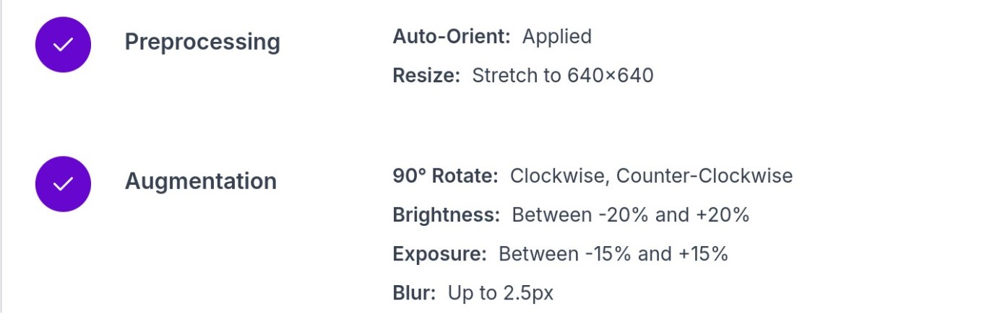
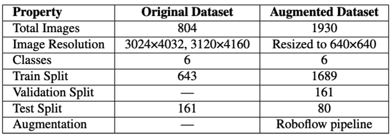
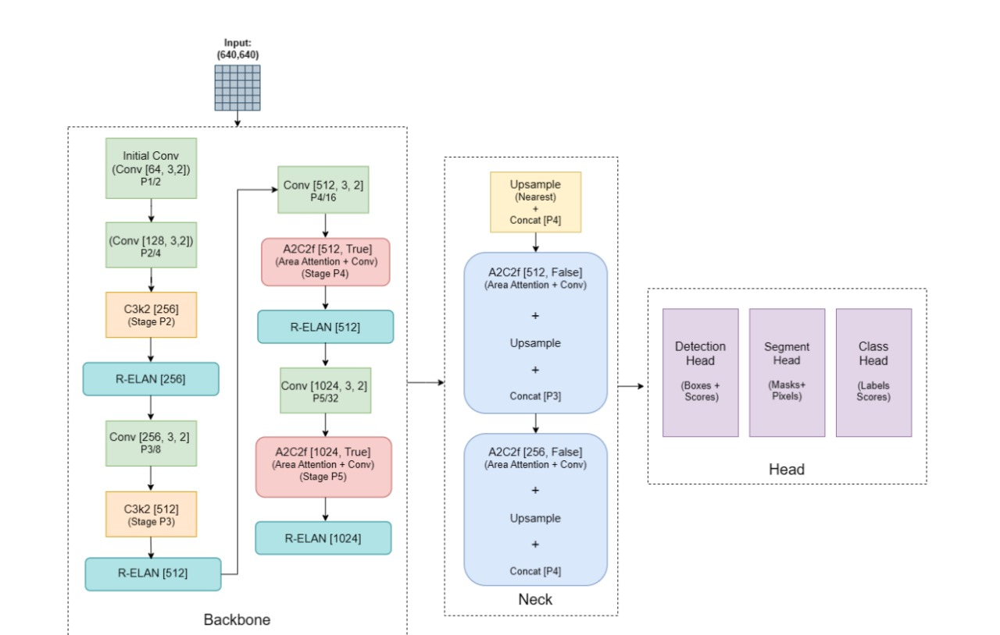
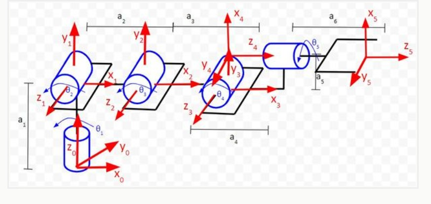
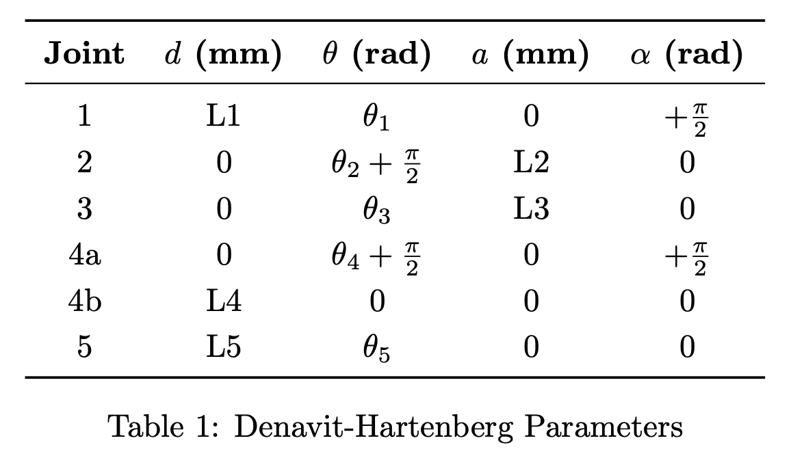
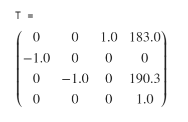

The methodology includes hardware setup, object detection using YOLOv12, 3D localization via camera calibration and depth estimation, and motion planning using inverse kinematics for the robotic arm. The robotic system uses Python for control and is deployed on a Raspberry Pi 5.
- Dataset
Laboro Tomato is an image dataset of growing tomatoes at different stages of their ripening which is designed for object detection and instance segmentation tasks. We also provide two subsets of tomatoes separated by size. Dataset was gathered at a local farm with two separate cameras with its different resolution and image quality.
- YOLO fine-tuning and Data Augmentation

Image 1: Data Augmentation

Image 2: Original vs Augmented Data
- YOLO architecture

Image 4: Architecture of YOLO
1. Backbone – Feature Extraction
The backbone of YOLOv12 is responsible for extracting features from the input image. It uses convolutional layers, particularly a new 7×7 separable convolution block, which helps preserve spatial context with fewer parameters. Instead of stacking deep convolution blocks, YOLOv12 uses an R-ELAN block—a residual module where features are split, processed in parallel paths, and then merged:
Y = X + F(X)
This improves gradient flow and feature fusion. Depth-wise (7×7) and point-wise (1×1) convolutions are used to reduce complexity. Multi-scale pyramids also help detect objects of varying sizes.
2. Neck – Attention & Efficiency
The neck applies attention to important regions using Flash Attention, an efficient attention mechanism. It segments the image into 4×4 patches and computes attention. This improves focus on relevant areas and helps stabilize training. Depth-wise separable convolutions are also used here to reduce FLOPs, making the model lightweight and suitable for devices like Raspberry Pi.
3. Head – Detection Logic
The head generates the final predictions by combining multi-scale features. It upsamples and downsamples feature maps (P3, P4, P5) to merge fine and abstract features.
1. P3 captures small objects (fine details).
2. P4 focuses on medium-sized objects (balanced view).
3. P5 handles large objects (high-level semantic info).
4. Output – Non-Max Suppression
Non-Max Suppression removes duplicate boxes by comparing IOU (Intersection over Union). If the IOU between boxes is above 0.6–0.7, only the one with the highest confidence is kept.
- Tomato Detection Using YOLO
- Methodologies: Theory & Implementation
Input Representation:
\[
X \in \mathbb{R}^{B \times 3 \times H \times W}
\]
Convolutional Transformation:
\[
Y = \sigma(W * X + b)
\]
Residual Connection:
\[
Y_{\text{res}} = f(X) + X
\]
Attention Mechanism:
\[
\text{Attention}(Q, K, V) = \text{softmax}\left(\frac{QK^T}{\sqrt{d_k}}\right) V
\]
Prediction Vector:
\[
\hat{y} = [x, y, w, h, c, p_1, \dots, p_{nc}, z_1, z_2, z_3]
\]
Softmax Classification:
\[
q_i = \frac{e^{z_i}}{\sum_{j}e^{z_j}}
\]
Loss Function:
\[
\mathcal{L} = \sum_{\lambda}\lambda_{\text{*}}\mathcal{L}_{\text{*}}
\]
Optimization:
\[
\theta_{t+1} = \theta_t - \eta \nabla \mathcal{L}
\]
- Computation Steps
Input: Image of a Tomato
\[
X \in \mathbb{R}^{B \times 3 \times H \times W}
\]
Step 1: Feature Extraction (Convolution Layers)
\[
Y_0 = \sigma(W_0 * X + b_0), \quad Y_1 = \sigma(W_1 * Y_0 + b_1)
\]
\[
Y_2 = f_{\text{C3k2}}^{(2)}(Y_1), \quad Y_3 = \sigma(W_3 * Y_2 + b_3)
\]
Step 2: Attention & Multi-Scale Processing
\[
\text{Attention}(Q, K, V) = \text{softmax}\left(\frac{QK^T}{\sqrt{d_k}}\right) V
\]
\[
Y_{\text{head}} = \text{Concat}(Y_{\text{P3}}, Y_{\text{P4}}, Y_{\text{P5}})
\]
Step 3: Prediction Vector (Object Detection)
\[
\hat{y} = [x, y, w, h, c, p_1, \dots, p_{nc}]
\]
Step 4: Ripeness Classification
\[
\hat{y} = [x, y, w, h, c, p_1, \dots, p_{nc}, z_1, z_2, z_3]
\]
\[
q_i = \frac{e^{z_i}}{\sum_{j}e^{z_j}}, \quad \text{ripeness} = \arg\max q_i
\]
Step 5: Loss Computation & Optimization
\[
\mathcal{L} = \lambda_{\text{bbox}}\mathcal{L}_{\text{bbox}} + \lambda_{\text{obj}}\mathcal{L}_{\text{obj}} + \lambda_{\text{cls}}\mathcal{L}_{\text{cls}} + \lambda_{\text{ripeness}}\mathcal{L}_{\text{ripeness}}
\]
\[
\theta_{t+1} = \theta_t - \eta \nabla \mathcal{L}
\]
Final Output: Bounding box + class label + ripeness classification
- Real-time Processing and Raspberry Pi 5 Integration
- Inverse Kinematics

Image 5: Kinematic Diagram

Image 6: DH Table

Image 7: Transformation Matrix
- Motor Control